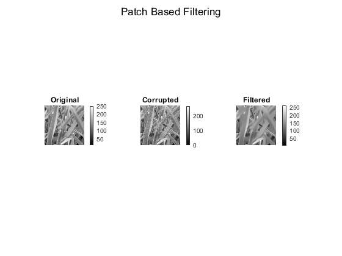
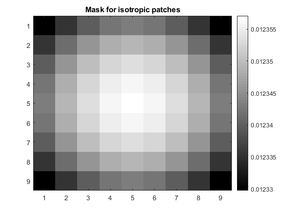

Contents
MyMainScript
close all;
clear all;
clc;
tic;
Input Images & Parameters
img1 = "../data/barbara.mat";
img2 = "../data/grass.png";
img3 = "../data/honeyCombReal.png";
input_images = [img1, img2, img3];
window_size = 25;
patch_size = 9;
sigma_opt = [150, 150, 150];
Smoothening the input images
for i = 2 : 2
if i == 1
img1_mat = load(input_images(i));
img = double(img1_mat.imageOrig);
else
img = double(imread(input_images(i)));
end
[corrupted_img, smoothed_img] = myPatchBasedFiltering(img, sigma_opt(i), window_size, patch_size);
figure;
sgtitle('Patch Based Filtering');
subplot(1,3,1), imshow(img, []);
title('Original');
colorbar;
subplot(1,3,2), imshow(corrupted_img, []);
title('Corrupted');
colorbar;
subplot(1,3,3), imshow(smoothed_img, []);
title('Filtered');
colorbar;

Displaying the mask used to make patches isotropic
gaussian_mask = fspecial('gaussian', patch_size, sigma_opt(i));
figure;
imshow(gaussian_mask, [min(gaussian_mask,[],'all'), max(gaussian_mask,[],'all')], ...
'InitialMagnification', 900);
title('Mask for isotropic patches');
colorbar;

Optimal parameter value(sigma*) and optimal RMSD
rmsd_loss = sqrt(sum(sum((smoothed_img-img).^2))/numel(img));
fprintf('The optimal sigma* value is %f\n', sigma_opt(i));
fprintf('The optimal RMSD value is %f\n', rmsd_loss);
The optimal sigma* value is 150.000000
The optimal RMSD value is 9.743873
RMSD values for i) 0.9*sigma and ii) 1.1*sigma
sigma = 0.9*sigma_opt(i);
[~, smoothed_img] = myPatchBasedFiltering(img, sigma, window_size, patch_size);
rmsd_loss = sqrt(sum(sum((smoothed_img-img).^2))/numel(img));
fprintf('The RMSD value for 0.9*sigma is %f\n', rmsd_loss);
sigma = 1.1*sigma_opt(i);
[~, smoothed_img] = myPatchBasedFiltering(img, sigma, window_size, patch_size);
rmsd_loss = sqrt(sum(sum((smoothed_img-img).^2))/numel(img));
fprintf('The RMSD value for 1.1*sigma is %f\n', rmsd_loss);
The RMSD value for 0.9*sigma is 8.703348
The RMSD value for 1.1*sigma is 11.058718
end
toc
Elapsed time is 51.744369 seconds.